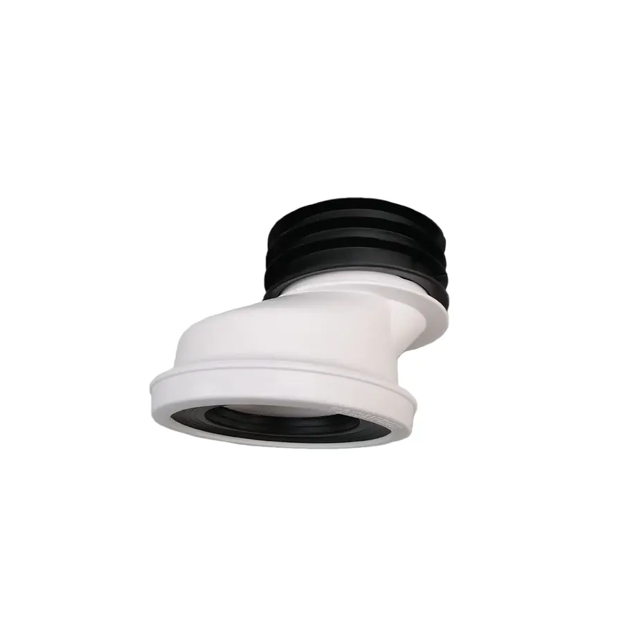
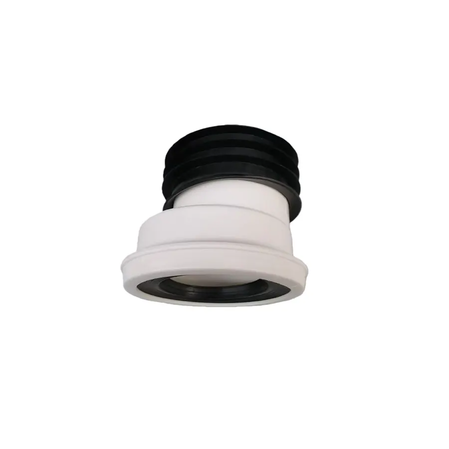

RU-SP-009
Toilet Relocation Device — 4CM, 254 g
Specification: 4CM · 254 g
View product →
ROYAL UNION catalogue reference · RU-SP-008
A plastic toilet relocation connector listed in the supplied catalogue. Confirm installation dimensions, offset, sealing and compatibility before ordering.
Catalogue data only: final units, dimensions, color, samples, packaging, applicable requirements and commercial terms must be confirmed before purchase.
For plumbing products, photos alone are not enough. Share the intended installation and technical requirements so the sourcing route can be checked against the correct basis.
The product page summarizes information supplied in the uploaded workbook. It is not a final quotation, technical approval, compliance statement or warranty.